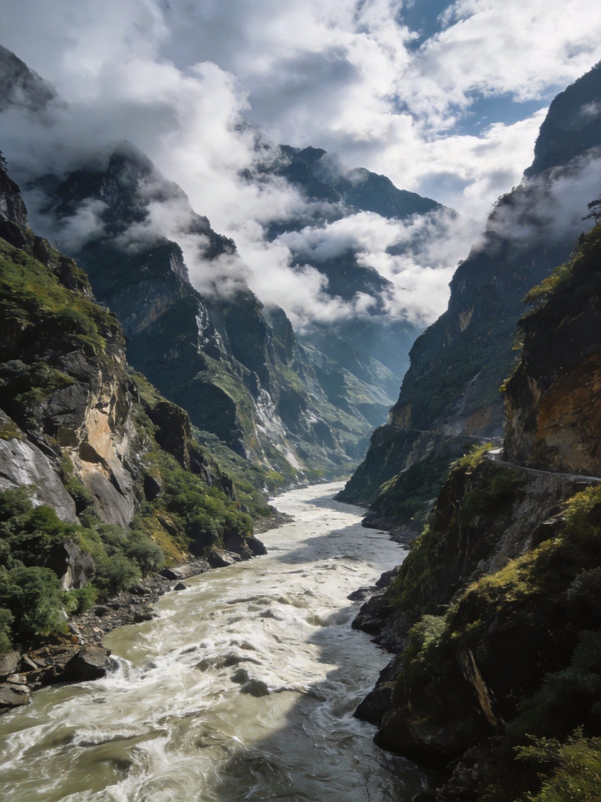
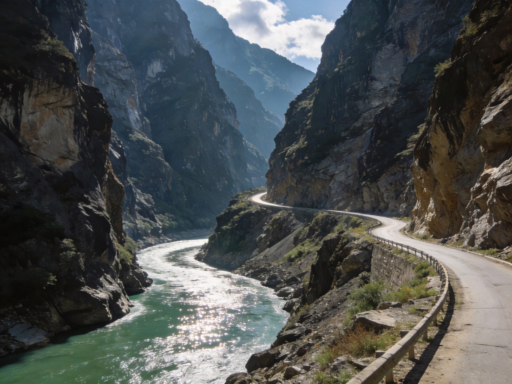
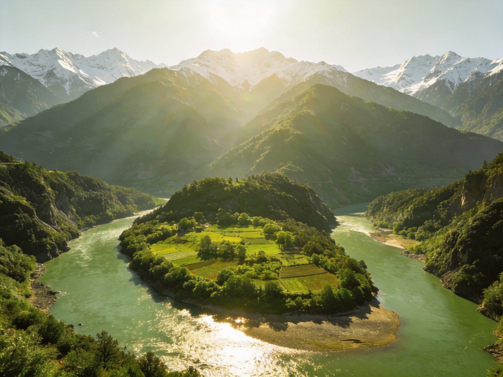
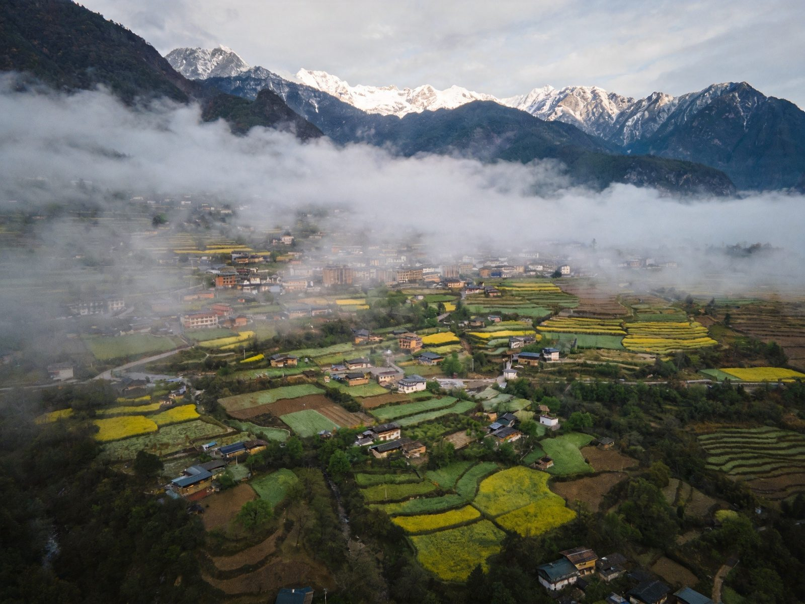
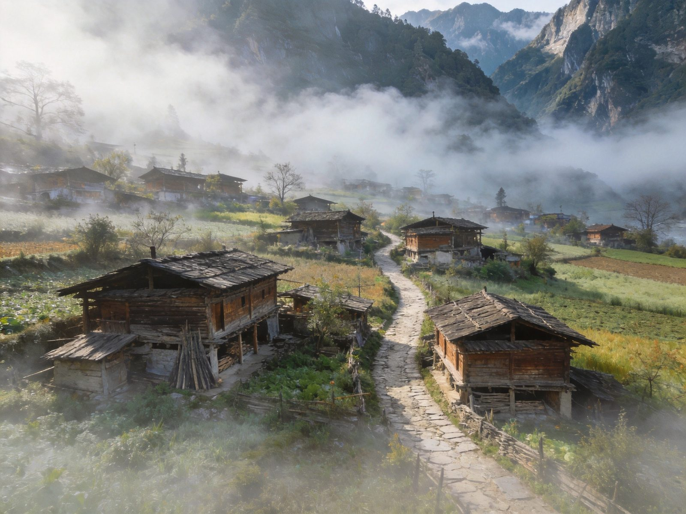

封面
总览
行前准备
Day1 峡谷
Day2 第一湾
Day3 村寨
美食清单
组合·贴士
安全提示

NU RIVER · 怒江丙中洛
秘境 · 峡谷
怒江 · 丙中洛 · 第一湾
怒江大峡谷
第一湾
人神共居
茶马古道
多民族
2–3 天 · A5 手册 · 自驾/摄影/人文
1
/ 9
怒江丙中洛
动线总览
3 天怎么玩
Route Overview
Day 1
峡谷
怒江大峡谷
沿江峡谷公路 → 峡谷风光 → 怒江奔腾
Day 2
第一湾
怒江第一湾 · 丙中洛
壮丽河湾 → 人神共居的丙中洛
Day 3
村寨
茶马古道村寨 · 返程
多民族村寨 → 田园古村 → 返程
TIP
自驾+沿路停靠
是怒江最舒服的方式；峡谷路弯多，别赶夜路。
TIP
🏷 怒江为代表的三江并流区域，自然与人文并重，慢慢走收获更多。
2
/ 9
怒江丙中洛
行前准备
出发前，记住这 3 点
Before You Go
🏨 住哪最顺
丙中洛镇上民宿
："人神共居之地"落脚，
首推
沿线乡镇客栈选择较少，旺季提前订
想观景可住村里农家，条件简约但真实
🚗 怎么走
自驾
沿怒江峡谷公路上行最自由；也可拼车/包车深入
进丙中洛多为盘山傍江路，
弯多会车注意
地广人稀，提前加好油、备好干粮
🎒 必带
防滑舒适鞋、防风保暖外套、防晒、雨具
海拔偏高紫外线强，多喝水、备随身补给

怒江 · 大峡谷
3
/ 9
怒江丙中洛
Day 1 · 峡谷
Day 1 · 峡谷
怒江大峡谷
沿江峡谷公路
→
峡谷风光
→
怒江奔腾
⛰ 怒江大峡谷
世界著名大峡谷，峡谷深切、江水奔涌
沿江公路蜿蜒，车窗外就是恢弘山水
🌉 观景停靠
沿途设观景台，驻足看江水与危崖同框
高黎贡山与碧罗雪山夹江对峙，壮阔震撼
TIP
沿途多设观景停靠点
，别赶路；转弯多，观景注意后方来车。
峡谷 · 壮阔
4
/ 9
怒江丙中洛
Day 2 · 第一湾
Day 2 · 第一湾
怒江第一湾 · 丙中洛
怒江第一湾
→
丙中洛田园
→
人神共居
🏞 怒江第一湾
江流在这里拐出巨大河湾，碧水环抱山体
观景台上俯瞰，气势磅礴又清秀
🌾 丙中洛
"人神共居之地"，雪山、田园、村寨和谐共处
青稞与稻香之间，多民族世代聚居于此
TIP
第一湾清晨雾气弥漫最仙
；多留意时段的云与光，风光随天而变。

第一湾 · 碧水环山
5
/ 9
怒江丙中洛
Day 3 · 村寨
Day 3 · 村寨
茶马古道 · 返程
古村茶马道
→
民族风情
→
返程
🏘 茶马古道村寨
雾里村、秋那桶等古村，石板路与木屋错落
沿茶马古道徒步一段，感受岁月痕迹
🎵 民族风情
怒族、傈僳族、独龙族等多民族聚居
民俗、歌舞与村寨生活，人文浓度高
TIP
古村徒步
穿防滑鞋
；尊重当地民俗，拍照先礼貌询问。

丙中洛 · 田园

古村 · 人家
6
/ 9
怒江丙中洛
美食清单
怒江的味道
Eats
🐟
江鱼
怒江江鱼、烤鱼 —— 峡谷农家的鲜
🍄
山珍菌菇
应季菌、野菜 —— 大山里的味道
🌾
青稞&玉米
青稞饼、玉米、高原粮 —— 朴实暖胃
🥘
民族家常菜
怒族/傈僳族农家菜 —— 地道烟火
🍖
腊肉&土鸡
柴火腊肉、放养土鸡 —— 醇香耐人
☕
土家茶饮
苦荞茶、酥油茶 —— 暖身解乏
TIP
峡谷
农家菜讲求本味
，腊肉土鸡别错过；菌子认正规店、务必煮熟。
7
/ 9
怒江丙中洛
组合 · 贴士
怎么串着玩
Combine & Tips
🚗
自驾
沿江公路自由停靠，是打开怒江的最佳方式
🏔
深度
时间充裕可向独龙江、滇西北更深处延伸
👨👩👧
亲子
自然探险+民族村寨，开阔眼界、寓教于乐
📷
出片
晨昏光第一湾与峡谷最震撼，云雾绝美
🔗
连玩
近
大理/丽江
，可作云南滇西环线的深度一站
TIP
怒江"峡谷+人神共居",
把节奏交给江水自然
，在秘境里慢慢走最值。
8
/ 9
怒江丙中洛
安全提示
看清这些，玩得更安心
Stay Safe
🚗
行车安全
峡谷路弯多会车难，勿弯道超车、别赶夜路
🌊
近水谨慎
江水湍急，观景不越护栏、不贸然下水
🥾
徒步
茶马古道穿防滑鞋，结伴而行、勿走野路
☀️
高海拔防晒
海拔偏高紫外线强，保湿多喝水自备补给
⛈
天气
山区天气多变，雨季留意降雨与落石
⚠️
紧急
紧急拨 110 / 120 / 119；求助景区/乡镇游客服务点
秘境怒江「WorldStip」祝你玩得尽兴 🏔
9
/ 9
怒江·丙中洛 · 秘境峡谷 2-3 日手册 · 由 WorldStip 定制
Insta360
记录美好
记录美好生活
相机指南 · CAMERA GUIDE